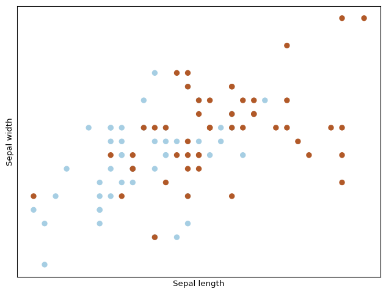

import matplotlib.pyplot as plt
from mpl_toolkits.mplot3d import Axes3D
from sklearn import datasets
from sklearn.decomposition import PCA
# import some data to play with
iris = datasets.load_iris()
X = iris.data[:100, :2] # we only take the first two features.
Y = iris.target[:100] # and first 100 samples
plt.figure(2, figsize=(8, 6))
plt.clf()
# Plot the training points
plt.scatter(X[:, 0], X[:, 1], c=Y, cmap=plt.cm.Paired)
plt.xlabel('Sepal length')
plt.ylabel('Sepal width')
plt.xticks(())
plt.yticks(())
plt.show()Quantum Support Vector Classifier
Let’s see how we can compose that particular model, step by step. Probably sQUlearn is one of the best resources in order to simplify our code. We will start loading the data. The infamous iris datatset (we will only take the first two values).
The task here is to find a good projection of those features so that we can better separate between the three classes (Setosa, Virginica and Versicolor). Some key steps are the splitting so that we have a fear metric to evaluate and the scaling of the variables.
from sklearn.preprocessing import MinMaxScaler
from sklearn.model_selection import train_test_split
X_train, X_test, y_train, y_test = train_test_split(
X,
Y,
test_size=0.33,
random_state=42,
)
scaler = MinMaxScaler((-0.9, 0.9))
X_train = scaler.fit_transform(X_train)
X_test = scaler.transform(X_test)Now we need to select a good embedding… Well, let try with a simple Z feature map.
from qiskit.circuit.library import ZFeatureMap
fmap = ZFeatureMap(X_train.shape[1], reps=1)
fmap.decompose().draw('mpl')Now we know where we will put our data. We need to compose a kernel with that. The simplest one,
from qiskit_machine_learning.kernels import FidelityQuantumKernel
from qiskit_algorithms.state_fidelities import ComputeUncompute
from qiskit.primitives import Sampler
# How to compute the fidelity between the states
fidelity = ComputeUncompute(sampler=Sampler())
# Feature map and quantum Kernel
kernel = FidelityQuantumKernel(feature_map=fmap, fidelity=fidelity)
kernel.evaluate(X_train[0,:], X_train[0,:])array([[1.]])That makes sense, a complete overlap between the two. What happens if we use different sample points.
kernel.evaluate(X_train[1,:], X_train[0,:])array([[0.33903138]])How good is our kernel?
Target Alignment
There is a metric we can use for that, called Target Alignment (Hubregtsen et al. 2022)
\[ TA(K) = \frac{\sum_{ij}K(x_i,x_j)y_iy_j}{\sqrt{\sum_{ij}K(x_i,x_j)^2\sum_{ij}y_i^2y_j^2}} \] where \(K\) is our kernel. We can test how good our kernel is then.
import numpy as np
def target_alignment(kernel, X, y_labels) -> float:
# Get estimated kernel matrix
kmatrix = kernel.evaluate(X)
# Scale y values to -1 and 1
nun_plus = np.count_nonzero(np.array(y_labels) == 1)
num_minus = len(y_labels) - nun_plus
_Y = np.array([y / nun_plus if y == 1 else y / num_minus for y in y_labels])
T = np.outer(_Y, _Y) # Y outer product
numerator = np.sum(kmatrix * T)
denominator = np.sqrt(np.sum(kmatrix * kmatrix) * np.sum(T * T))
return numerator / denominator
target_alignment(kernel, X_train, y_train)np.float64(0.6075420371223076)target_alignment(kernel, X_test, y_test)np.float64(0.5026116721148101)Not bat, we could then get an estimate on the separability of a selected kernel with this. Now that we know our kernel is good enough, lt’s check how it works alongside a Support Vector Classifier.
from qiskit_machine_learning.algorithms import QSVC
# QKernel + SVC
qsvc = QSVC(quantum_kernel=kernel)
qsvc.fit(X_train, y_train)
qsvc.score(X_test, y_test)1.0Perfect score! Well, it was not that hard 😊
Role of entanglement
We can try with a little bit more complex feature map. In fact, \(Z\)-embedding has no entanglement capacity as it is only composed by independent single qubit rotations. We can add a little bit of entanglement to it and check if that performs better (it has entanglement and that is cool, so it should work better).
# import some data to play with
iris = datasets.load_iris()
X = iris.data[50:150, :2] # we only take the last two features.
Y = iris.target[50:] # and first 100 samples
plt.figure(2, figsize=(8, 6))
plt.clf()
# Plot the training points
plt.scatter(X[:, 0], X[:, 1], c=Y, cmap=plt.cm.Paired)
plt.xlabel('Sepal length')
plt.ylabel('Sepal width')
plt.xticks(())
plt.yticks(())
plt.show()
That looks more complex. Let’s check our previous feature map.
# Train and test
X_train, X_test, y_train, y_test = train_test_split(
X,
Y,
test_size=0.33,
random_state=42,
)
# Scale
scaler = MinMaxScaler((-0.9, 0.9))
X_train = scaler.fit_transform(X_train)
X_test = scaler.transform(X_test)
# Feature map and kernel composition
fmap = ZFeatureMap(X_train.shape[1], reps=1)
fidelity = ComputeUncompute(sampler=Sampler())
# Feature map and quantum Kernel
kernel = FidelityQuantumKernel(feature_map=fmap, fidelity=fidelity)
kernel.evaluate(X_train[0,:], X_train[0,:])
# QKernel + SVC
qsvc = QSVC(quantum_kernel=kernel)
qsvc.fit(X_train, y_train)
qsvc.score(X_test, y_test)0.6666666666666666Well, it makes sense that this one is harder.
from sklearn.metrics import classification_report
y_pred = qsvc.predict(X_test)
print(classification_report(y_test, y_pred)) precision recall f1-score support
1 0.68 0.79 0.73 19
2 0.64 0.50 0.56 14
accuracy 0.67 33
macro avg 0.66 0.64 0.65 33
weighted avg 0.66 0.67 0.66 33
We can see how well the representation in the bloch sphere separates the two groups.
target_alignment(kernel, X_train, y_train)np.float64(0.843602003610384)target_alignment(kernel, X_test, y_test)np.float64(0.7336524493034711)Curious enough, the \(TA\) is higher in this case, meaning it separates better between the two groups, yet the classificaiton is worst. Let’s check out with some more complex feature map.
from qiskit.circuit.library import ZZFeatureMap
# Feature map and kernel composition
fmap = ZZFeatureMap(X_train.shape[1], reps=1)
fmap.decompose().draw('mpl')fidelity = ComputeUncompute(sampler=Sampler())
# Feature map and quantum Kernel
kernel = FidelityQuantumKernel(feature_map=fmap, fidelity=fidelity)
kernel.evaluate(X_train[0,:], X_train[0,:])
# QKernel + SVC
qsvc = QSVC(quantum_kernel=kernel)
qsvc.fit(X_train, y_train)
qsvc.score(X_test, y_test)0.48484848484848486Uff! That does not look good.
y_pred = qsvc.predict(X_test)
print(classification_report(y_test, y_pred)) precision recall f1-score support
1 0.58 0.37 0.45 19
2 0.43 0.64 0.51 14
accuracy 0.48 33
macro avg 0.51 0.51 0.48 33
weighted avg 0.52 0.48 0.48 33
target_alignment(kernel, X_train, y_train)np.float64(0.7647315781779153)target_alignment(kernel, X_test, y_test)np.float64(0.6725460488050752)Well, the \(TA\) in this case shows it separates worst in the latent Hilbert space data is encoded into so it might make sense that this worsens the prediction. But common, we added entanglement, that is the magic sauce for QML. That should do it’s thing right? Well, I guess this is why people has not yet solved why and how QC will boost ML for the general case.